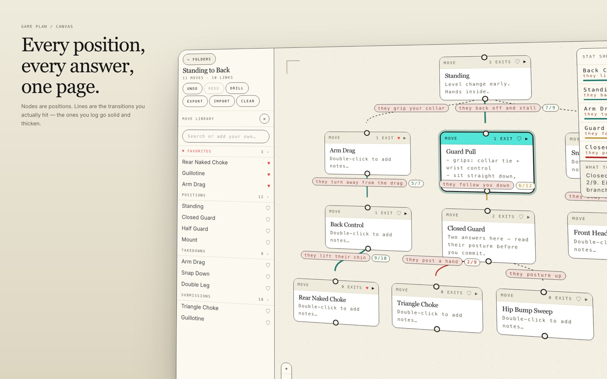
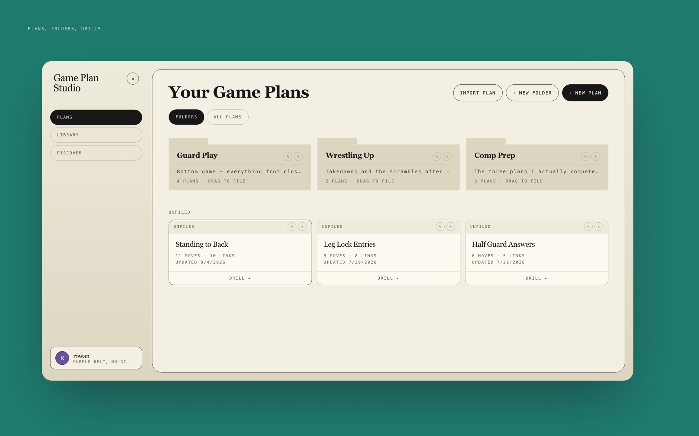
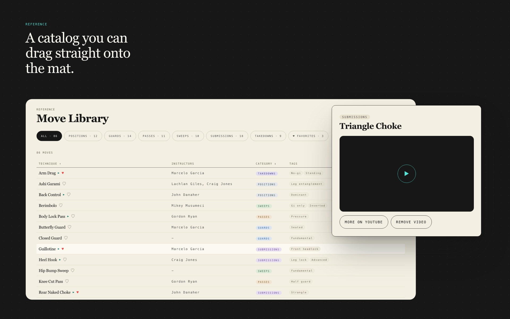

Game Plan Studio
-
Role
Solo design and build
Year
2025 – present
-
Goal
Give BJJ practitioners a living record of what actually works for them, not a static reference
Status
In development
-
Stack
Vite, React 19, TypeScript, React Flow, Zustand, Tailwind v4
Link
To be added
Description
An interactive decision tree editor for Brazilian Jiu-Jitsu game planning. Every node is a position and every edge is a branch: the opponent's reaction and your answer to it.
Overview
A game plan is a decision tree, but most people keep theirs in a notes app or nowhere at all. Game Plan Studio makes it a graph you can actually see. You build the plan visually, log reps on individual transitions, and the app tracks your hit rate over time, so you know what is working and what needs drilling.
The rep data is what makes it a living record rather than a static reference. Logging a win or a loss on a transition changes the visual weight and color of that line, so the plan redraws itself around the branches that actually land. A stat sheet ranks every transition by hit rate with coaching callouts, and a mobile drill view makes the whole thing readable ten minutes before class.
- Canvas editor with pan and zoom, inline node renaming, and connected child spawning
- A branch editor per transition: opponent reaction plus your answer
- Rep logging directly on edges, where hit rate drives the weight and color of each line
- Stat sheet ranking every transition by hit rate, with coaching callouts
- Drill mode, a mobile-optimized read view for reviewing a plan before class
- Move library of catalogued techniques you can drag onto the canvas
- Export and import as JSON, with auto-save to localStorage

Role & process
Solo, end to end. The data model, the UX, the canvas interactions, and all of the implementation.
- Put opponent reactions on the edges rather than the nodes, because in a decision tree the branch condition is the edge, not a separate entity. That one call is what let rep logging and hit rate live on transitions instead of positions
- Built the canvas on React Flow, with Zustand holding graph state so node, edge and rep updates all go through one store
- Kept persistence local: auto-save to localStorage plus JSON export and import, so the tool works without an account or a backend
- Designed drill mode as a separate read-only view rather than a responsive squeeze of the editor, since the phone use case is reviewing, not editing

Goals
Still in development, so the measure is what it is being built toward rather than what it has returned.
- Make game planning tactile and visual instead of notes in a doc
- Replace gut-feel drilling with personal, measured rep data
- Build a mobile drill view that is genuinely usable ten minutes before class